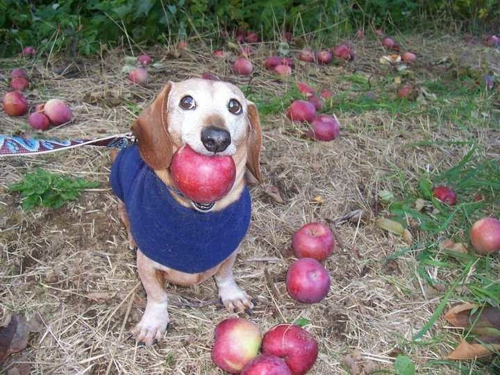

"Пресловутые кусали пыли" как фраза имеет смысл в контексте определённого
типажа, или может "подвида" людей. Но для общего понимания вначале стоит
уточнить что такое вообще "кусать пыль" в моём понимании. Пыль, в первую
очередь, ассоциируется у меня с потасовкой, которая проходит настолько
ожесточённо что "аж пыль поднимается". Отсюда и кусание пыли - как бы угроза
связанная с потасовкой. Такие люди будут мнить из себя невероятных воинов,
способны поднимать тонны пыли табуном своей невъебенной крутости, и
выглядеть будут точно также. Вообще, от того как ты "ощущаешь, как ты
выглядишь в глазах других" зависит очень многое, банально - самооценка.
Которая куда глубже чем кажется. Сотню раз заявлял, и напишу ещё раз - мозг
устроен до одури банально - если твердить ему определённую вещь, например,
"я ужасен, всё пиздец", то он ПОВЕРИТ в это, главное чтоб твой внутренний Я
поддерживал эту идею. Сломить человека банальным повторением "Ты бездельник,
собака" конечно можно, но пока он сам не поверит в это - ничего не
получится. А в какой же момент он начнёт в это верить? Сложно однозначно
ответить. В глубинах разума даже самых фанатичных людей остаётся толика
сомнения, не дающая им в полной мере "погрузится" в абсурд который они
избрали в качестве предпочитаемого. Даже великие диктаторы в глубине души
держали эту долю сомнения, страдали от паранойи и не могли в полной мере
руководствоваться чистым разумом. Однако вышеупомянутое "твержение себе"
работает и в обратную сторону - говоря каждый день о том, как же ты ахуенен
собой ты и впрямь можешь поверить в это, если не полностью то хотя бы
отчасти. По крайней мере лучше, чем рассказывать каждому встречному как же
ты(то есть ты, читающий) отвратителен, и всё вокруг тлен мрак тоска и
попаболь. Но заигрывания с этим могут сделать тебя пресловутым кусателем
пыли, берущим на себя слишком многое. Почему же он "пресловутый"? Потому что
его мир легко рушится за рамками кусания пыли. А вот почему - не расскажет
ограничение по символам.

Автор: Xycu